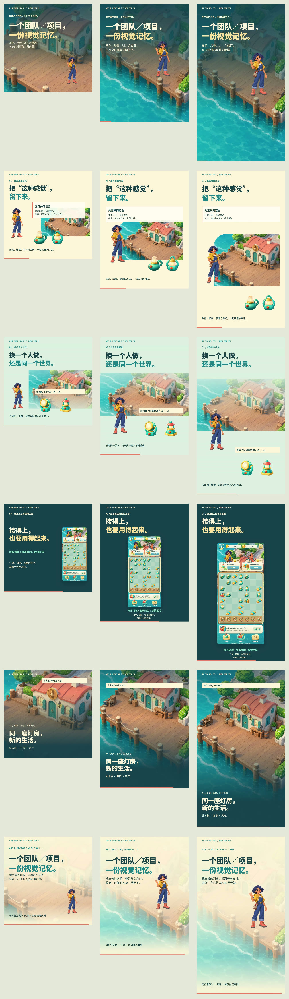

1 : 1
1080 × 1080 · 30 fps · 24 秒
下载 MP4 · 布局记录从角色与世界设定，到合成、交付和灯房修复。复用已经完成的美术资产，让同一段故事在方形、肖像与竖屏里各自成立。
1080 × 1080 · 30 fps · 24 秒
下载 MP4 · 布局记录1080 × 1440 · 30 fps · 24 秒
下载 MP4 · 布局记录1080 × 1920 · 30 fps · 24 秒
下载 MP4 · 布局记录每个镜头独立安排标题、人物、道具与界面。游戏段使用实际 UI 源码，英文版同时翻译界面中的可见文字。
原创候选案例。美术与界面来自 Art Director 已发布版本；原型用于演示，未声称为上线游戏或经过真人主美批准。
以下静帧均从最终 MP4 提取。三列依次为 1:1、3:4、9:16。
